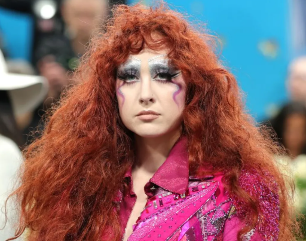
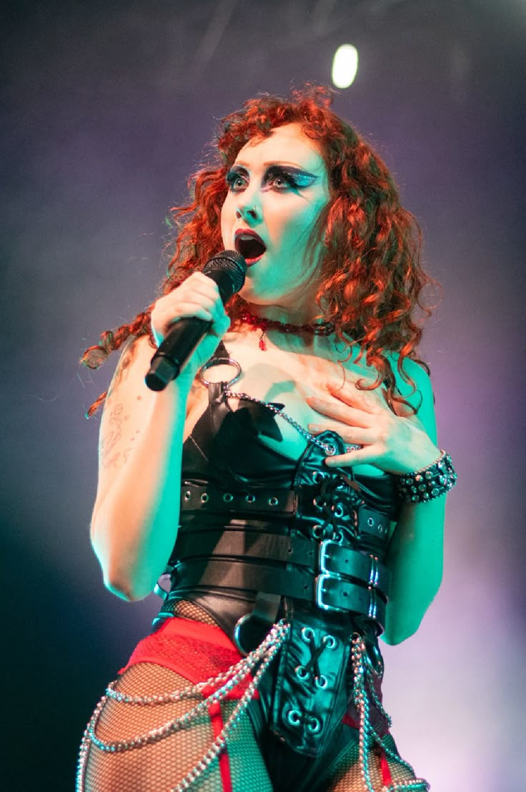

Últimas Notícias

10 DE MAIO
Chappell Roan arrasa no tapete vermelho do Met Gala
O look ousado de Chappell foi um dos mais comentados da noite, misturando referências camp e alta costura.
15 DE ABRIL
“The Giver” estreia no Top 10 do Spotify Brasil
O novo single conquistou rapidamente o público brasileiro, chegando ao Top 10 em 24 horas.

20 DE MARÇO
Turnê Européia de Chappell Roan tem ingressos esgotados
Datas em Londres, Paris e Berlim se esgotaram em minutos após o anúncio.